1. Cover Page
Technical Report
Course: IT305
Team Name: COFFEE CODERS
Team Members:
Instructor: Christine Marie Ordaneza
Submission Date: October 23, 2026
Draft source prepared from verified repository and local checkpoint evidence. Complete the missing manual evidence, declaration details, signatures, links, and final PDF inspection before submission.
The Small Inventory and Supplier System addresses fragmented inventory, request, borrowing, reservation, incident, supplier, and purchasing records used by three school offices: the Property Custodian Office, Hospitality Management Laboratory Office, and Science Laboratory Office. Paper forms and disconnected spreadsheets make it difficult to maintain consistent stock balances, enforce office responsibility, trace approvals, and preserve a reliable history.
SISS provides a local web application where requesters can submit and track requests, office personnel can perform office-scoped operations, office heads can approve and adjust authorized records, and administrators can manage the system across offices. This midterm report focuses on four verified integration milestones: architecture, a consumed API response, secure category CRUD, and authenticated role-restricted access.
Implemented: local authentication, six application roles, three office scopes, catalog and soft deactivation, stock and operational workflows, dashboard health integration, RLS, and automated tests.
Browser verified: login, admin dashboard, health status, category create/read/update/deactivate, student login, and student rejection from an administrator route.
Planned or incomplete: hosted deployment, production email/password recovery, private incident attachment delivery, scheduled notifications, configurable multi-step approvals, production monitoring, and representative-user evaluation.
The implemented design follows a medium application architecture: a Next.js entry point delegates to a feature service or Server Action, which owns Supabase access. Presentation components do not own database security. PostgreSQL remains the final data authorization and integrity boundary.
The detailed source plan is stored at
docs/midterm/week-1-architecture/integration-plan-v2.md.
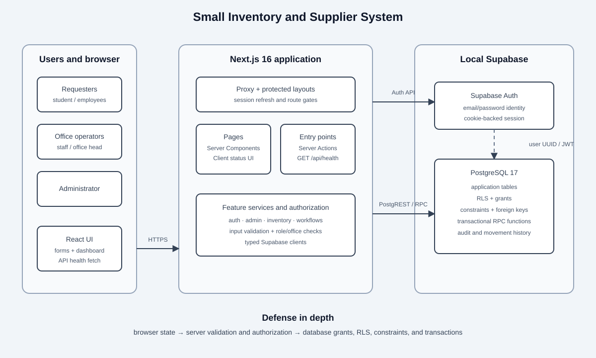
signInAction.src/proxy.ts refreshes the session during navigation.requireActiveUser loads the profile and roles and rejects inactive accounts.
The dashboard renders ApiHealthStatus, which requests
GET /api/health, validates HTTP success and {"status":"ok"}, and
renders either “System API Online” or a safe unavailable state.
Authorized forms call validated Server Actions. Supabase query builders issue parameterized
operations. RLS checks active role and office scope. Category removal is implemented as
is_active = false so historical references remain intact.
| Layer | Verified technology | Purpose |
|---|---|---|
| Browser UI | React 19.2.8, Tailwind CSS 4.3.3 | Pages, forms, feedback, responsive presentation |
| Web runtime | Next.js 16.3.4 App Router, TypeScript 6.0.3 | Routing, rendering, Route Handlers, Server Actions |
| Supabase clients | @supabase/supabase-js 2.114.0, @supabase/ssr 0.12.5 |
Typed data access and cookie session integration |
| Identity | Supabase Auth | Email/password identity and sessions |
| Database | Local PostgreSQL 17 through Supabase CLI 2.121.0 | Data, RLS, constraints, transactions, audit history |
| Testing | Vitest 4.1.11, Testing Library, Playwright 1.62.1, pgTAP | Unit/component, browser, and database policy verification |
| Local runtime | Node.js, npm, Docker Desktop | Development and local Supabase services |
| Integration point | Contract | Status | Evidence |
|---|---|---|---|
| Browser → Next.js | Navigation, forms, Server Actions, health JSON | Implemented and browser verified | Figures 2–15, with limitations recorded for Figures 5 and 13 |
| Dashboard → health endpoint | GET /api/health returns {"status":"ok"} |
Automated and browser verified | Figures 3–5 |
| Next.js → Supabase Auth | Sign in, getUser, refresh, sign out |
Automated and browser verified | Figures 2–3 and 14–15 |
| Next.js → database | Typed table queries and RPC calls | Implemented and tested | Vitest and pgTAP results |
| Auth → profiles/roles | User UUID connects Auth identity to profile and role rows | Implemented and tested | Identity migration and pgTAP |
| PostgreSQL security | Grants, RLS, constraints, transactional functions | Implemented and tested | 56 focused pgTAP assertions |
src/app/api/health/route.ts exposes a public liveness response containing only
{"status":"ok"}.
src/features/status/components/ApiHealthStatus.tsx is a small Client Component
placed on the protected dashboard. It requests the endpoint without caching, validates the
status code and JSON contract, and handles loading, success, malformed response, HTTP failure,
and network failure states.
Focused tests cover the Route Handler contract and four component outcomes. The final focused API rerun passed two test files and five tests. The earlier checkpoint run that included authentication and inventory tests passed ten files and forty tests.
The dashboard indicator is visible in Figure 3. Screenshot 03 was inspected but is effectively blank and is excluded as proof; it is retained unchanged in the evidence directory for audit transparency.
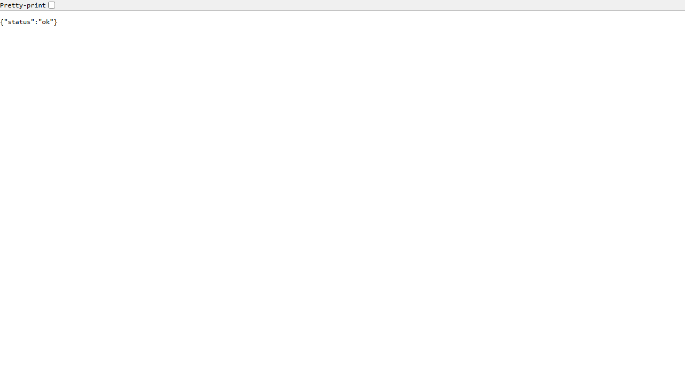
{"status":"ok"}. Verified; the image is
visually sparse because the endpoint returns JSON rather than a rendered page.
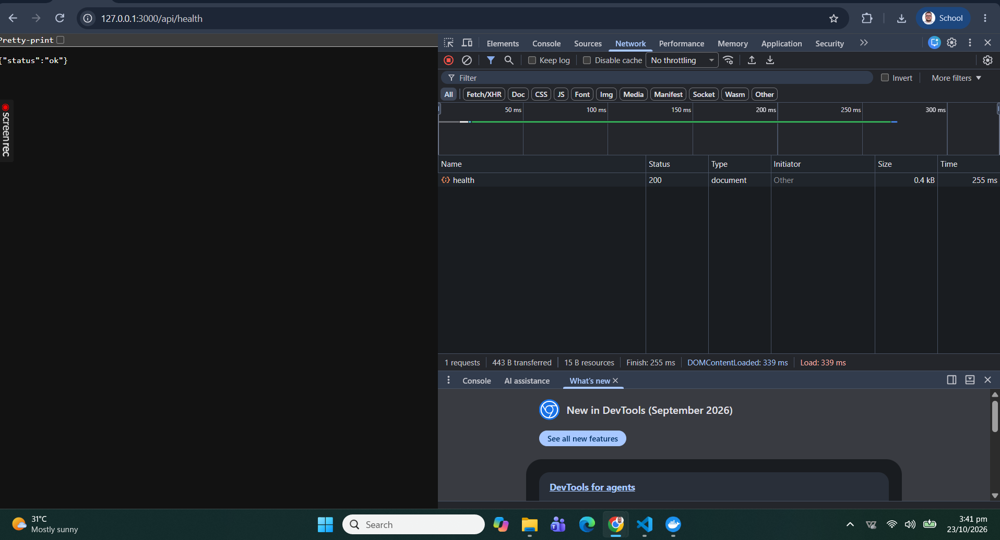
/api/health, JSON response
{"status":"ok"}, and Network status 200. Verified with a limitation: the
Network row does not visibly label the request method and the Response subpanel is not open.
| Operation | Implementation | Security | Verification |
|---|---|---|---|
| Create | createCategoryAction |
Server validation, role/office guard, INSERT RLS | Browser and pgTAP verified |
| Read | getCategoryOptions |
Inventory access guard and SELECT RLS | Browser and pgTAP verified |
| Update | updateCategoryAction |
UUID validation, office check, UPDATE RLS | Browser, validation tests, and pgTAP verified |
| Deactivate | is_active = false through update action |
Same role/office checks and policy | Browser verified |
Supabase query builders separate values from generated SQL operations. Input is validated at the server boundary. The database independently checks the active user and office scope.
Deletion qualification: SISS uses soft deactivation to retain referenced
inventory history. The report does not claim a physical SQL DELETE. Instructor
confirmation is required if the rubric specifically requires permanent deletion.
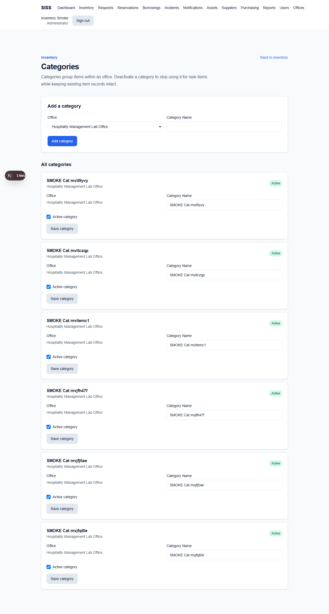
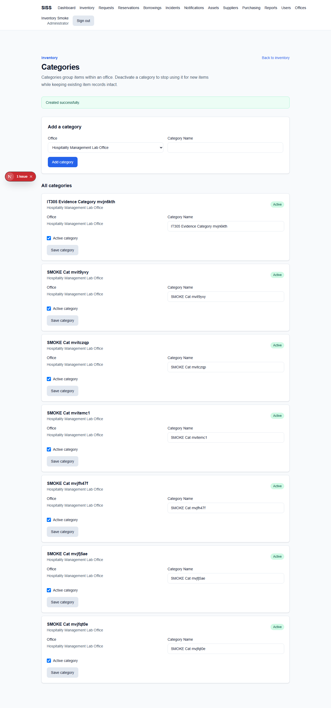
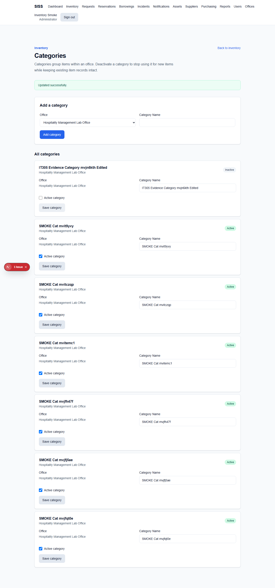
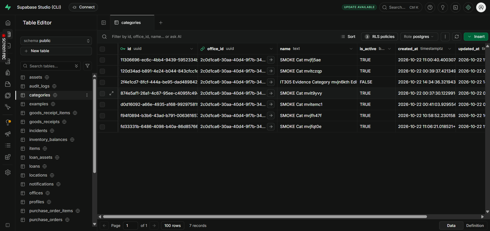
categories table before the separate database CRUD record
was created. Verified with a limitation: the table is unfiltered and already contains older
fictional evidence rows.
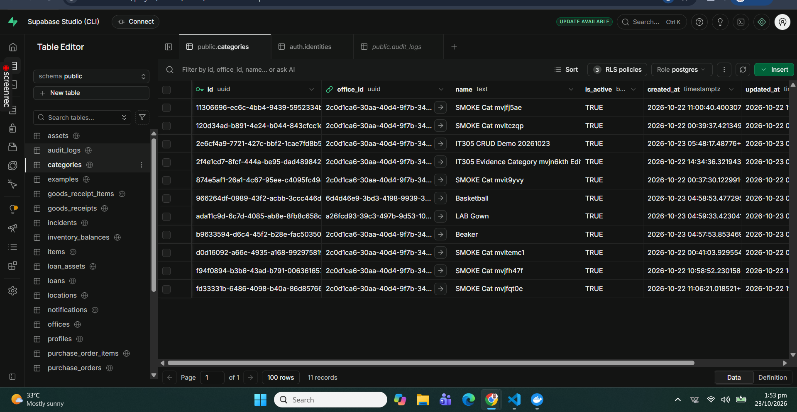
IT305 CRUD Demo 20261023 row with
is_active = TRUE. Verified create evidence.
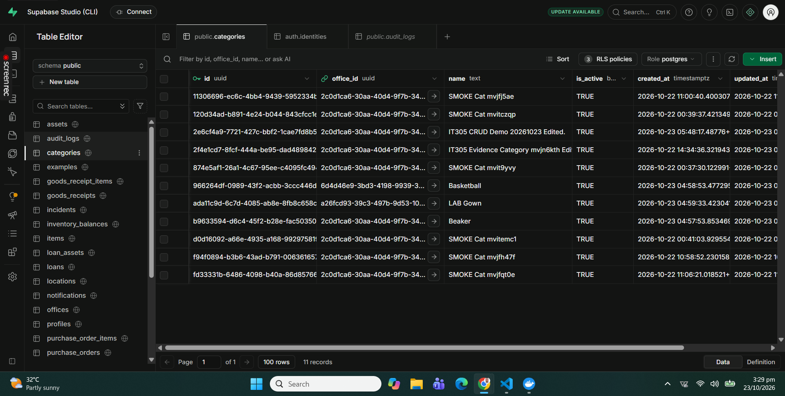
IT305 CRUD Demo 20261023 Edited. and
still active. Verified update evidence.
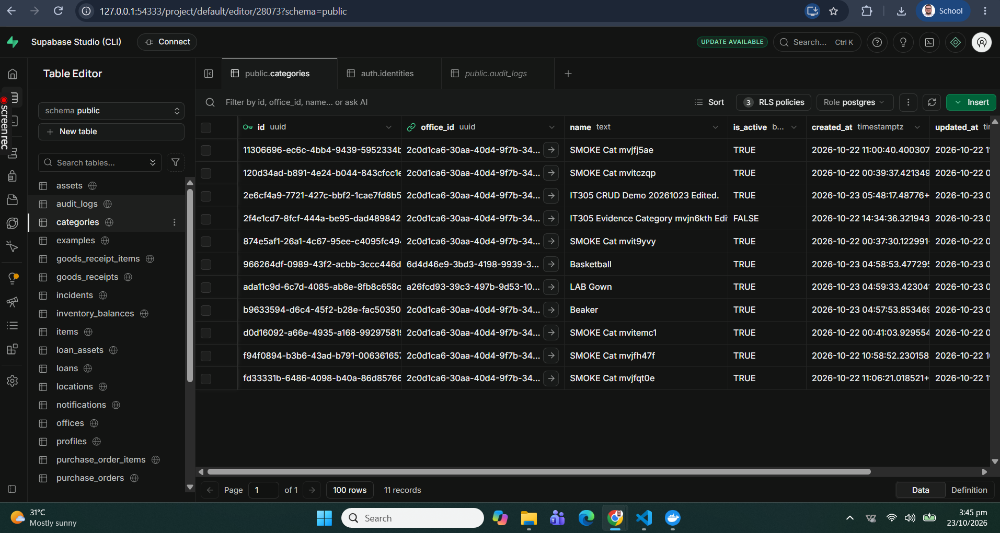
TRUE; a different older evidence row
displays FALSE. This figure does not prove deactivation of the same CRUD Demo
record. Correct direct database proof remains PENDING.
SISS uses Supabase email/password authentication. Public registration is disabled locally.
Protected layouts call requireActiveUser; administrator pages call
requireAdmin; inventory uses office-aware server guards. PostgreSQL RLS repeats
authorization beside the data operation.
The schema supports student, teacher, non_teaching,
office_staff, office_head, and admin. Office staff and
office heads are limited to assigned offices; administrators operate across offices. The
evidence run verified an admin session and an isolated student session. A direct student
request to /admin/users returned HTTP 404.
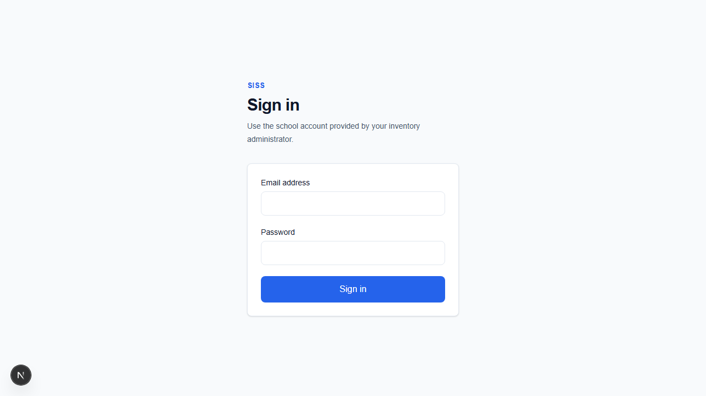
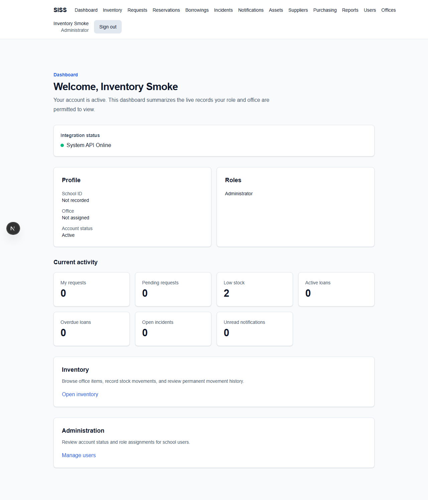
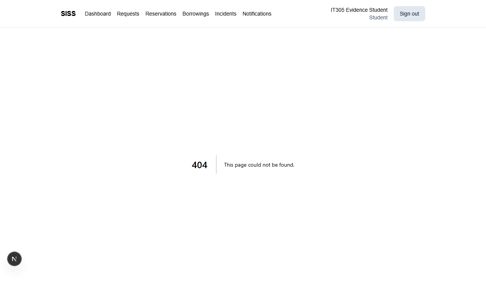
A read-only aggregate query against the local Supabase Auth schema returned five authentication users, five users with a stored password hash, and five hashes matching the bcrypt format. No identity or hash value was selected. These counts demonstrate the local stored-hash format but do not alone prove password strength, secure transport, access governance, or every aspect of password security.
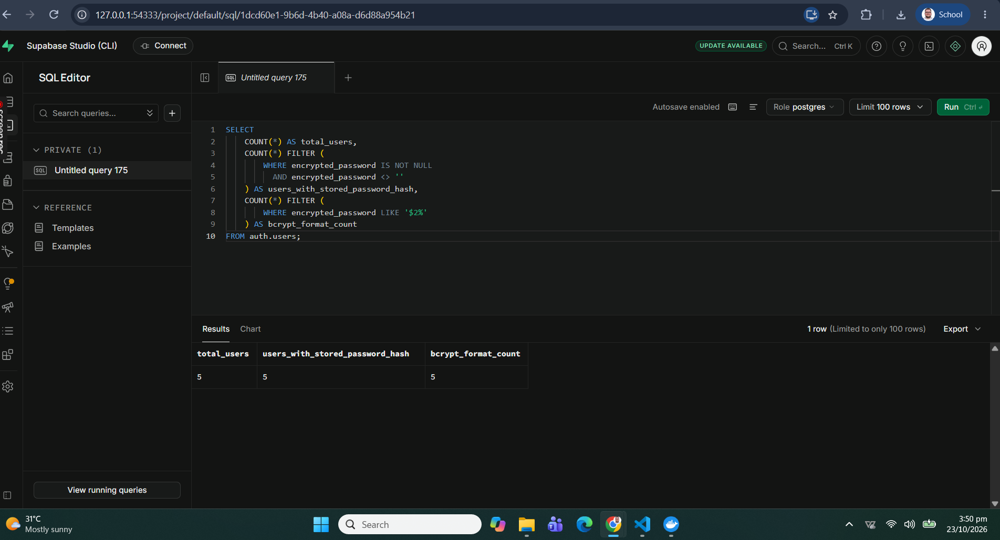
npm install initially. Use npm ci after the lockfile is
committed.
.env.example to the ignored .env.local and set the local
public Supabase URL and publishable key. Do not commit the file.
npm run supabase:start.npm run dev -- --hostname 127.0.0.1 --port 3000.
http://127.0.0.1:3000.
Checkpoint safety: do not run supabase db reset while preserving
local demonstration accounts and evidence data.
| Verification | Actual result | Date |
|---|---|---|
| Focused API/auth/category Vitest command | 10 files, 40 tests passed | 2026-10-22 |
| Final focused API rerun | 2 files, 5 tests passed | 2026-10-22 |
| Focused identity and inventory pgTAP | 2 files, 56 assertions passed | 2026-10-22 |
| Changed-file ESLint | Passed | 2026-10-22 |
TypeScript tsc --noEmit |
Passed | 2026-10-22 |
| Earlier operational MVP validation recorded in repository | 44 Vitest tests, 136 pgTAP assertions, 3 Playwright smoke tests, production build passed | 2026-10-22 |
| Checkpoint browser evidence | Public redirect/API and admin/API/category flow passed; corrected focused student restriction rerun passed | 2026-10-23 |
The later broad navigation audit was stopped when the 8 GB host entered severe memory pressure and local Supabase became unhealthy. It is not counted as a passing audit. All 15 screenshot files decode as PNG images and were visually inspected. Screenshot 03 is invalid as evidence, and Screenshot 14 does not prove deactivation of the same database demonstration record.
caret-color: transparent styling; the screenshots contain the Next
development issue badge on category pages.
This report is submitted by COFFEE CODERS: APRIL PELISCO, LEAH MAE ANONG, and DAVID CHRISTIAN LAXINA. Individual contributions must be recorded from genuine team evidence and are not inferred from team membership.
The repository currently contains eight genuine commits, all authored by Christian Laxina. The operational implementation and test groups now have real commit hashes. This Midterm documentation and evidence package is staged but remains uncommitted, so it does not yet have a commit hash.
| Hash | Date | Author | Subject |
|---|---|---|---|
dda498a |
2026-10-24 | Christian Laxina | test: add SISS workflow and midterm evidence coverage |
5912041 |
2026-10-24 | Christian Laxina | feat: implement SISS inventory and operational workflows |
f2f98b4 |
2026-10-24 | Christian Laxina | docs: update SISS project context and progress |
89cf9ca |
2026-10-22 | Christian Laxina | Complete Phase 1 authentication and security |
d895eba |
2026-10-21 | Christian Laxina | chore: move project files to repository root |
5fdf5d2 |
2026-10-21 | Christian Laxina | feat: add application source, tests, and database migrations |
1322f3f |
2026-10-21 | Christian Laxina | docs: add project documentation, playbooks, and agent guidance |
508a487 |
2026-10-21 | Christian Laxina | chore: scaffold project configuration and tooling |
PENDING EVIDENCE: final Git log after reviewed checkpoint commits; genuine collaboration records identifying each member’s work; group demonstration recording; and individual YouTube walkthrough links.
Repository planning identifies OpenCode in the supplied project plan. Codex assisted with
repository inspection, implementation, documentation, tests, and local evidence automation.
ChatGPT assistance must be declared only by members who actually used it. Each member must
complete and sign an individual form from
docs/midterm/documentation/AI-Declaration-Form-Template.md.
Real chat exports or screenshots must be stored under /ai-evidence using dates
and tool names. That directory currently contains only a manifest because no chat exports have
been supplied. Uncommitted AI-assisted work must leave the commit-hash field blank until
genuine commits exist.
PENDING EVIDENCE: dated AI chat exports, completed usage logs, real corresponding commit hashes for currently uncommitted work, signed declarations, and dates signed.
Figures 2–15 reference applicable evidence from the 15 genuine PNG files in
docs/midterm/screenshots/. Screenshot 03 is retained but excluded as proof
because it is effectively blank. Screenshot 14 is included only to disclose its record
mismatch. The detailed verification state and pending-evidence items are maintained in
docs/midterm/documentation/evidence-index.md.
Document status: technically consolidated but not final. Correct database
deactivation proof, collaboration media, final Git evidence, AI chat exports, completed
declarations, signatures, recording links, and final PDF inspection are still required. If the
instructor requires the GET method and Response tab visibly inside the same Network image, a
clearer API capture is also pending. The intended final filename is
IT305_Midterm_COFFEE_CODERS.pdf.